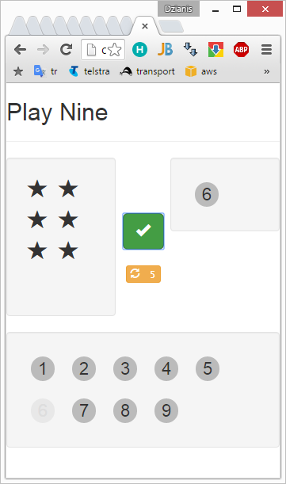

Play 9 Stars

The game is aimed to help kids learn math.
The rules are as following:
A random number of stars (from 1 to 9) appears on the screen.
One needs to pick up numbers by clicking their pictures.
The picked up numbers should sum up to match the number of stars.
Each number can be used only once.
To win the game all numbers should be used.
If it is not possible to create a sum to match the stars one can hit the redraw button, which will
regenerate the stars. The redraw button can be used 5 times.
I borrowed this game from a pluralsight course about React.js.